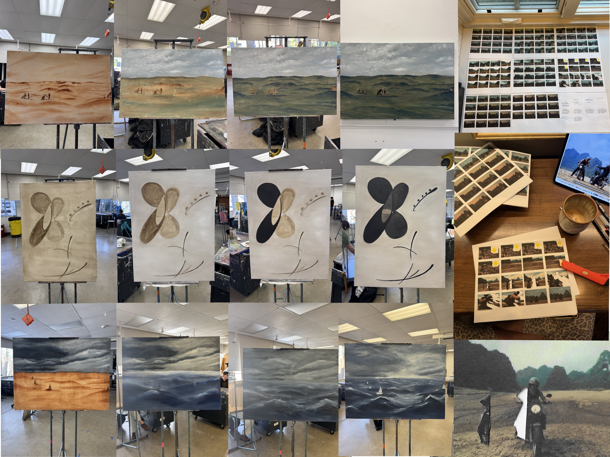

B-Roll


My process for my mixed media animation work moves between physical and digital stages to build layered visual narratives. I begin by printing stills from my films and drawing over each frame. I work directly on top of these printed images, responding to movement, composition, and emotion within each scene. Once complete, I scan the altered stills back into a digital format using a printer, bringing the physical marks back into a digital space. From there, I crop, sequence, and assemble the images to construct the final animation. This process allows me to blend hand-drawn texture with digital editing, creating a fluid exchange between mediums that shapes the final work.